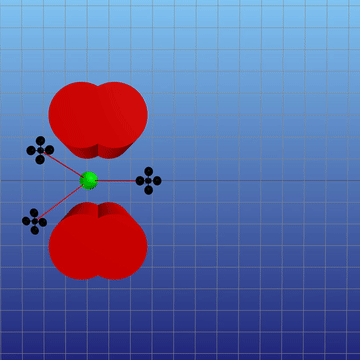

Scalable Cooperative Transport of Cable-Suspended Loads with UAVs using Distributed Trajectory Optimization

In this work, we develop and implement a distributed algorithm for solving a team-lift problem and then demonstrate the approach with three quadrotors carrying a heavy load. I am co-lead author on this paper and designed the decomposition approach, team-lift dynamics, and prototyped the distributed algorithm on a single-threaded machine. I also assisted in the fabrication of the custom quadrotors and experiments in the motion capture room.